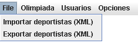
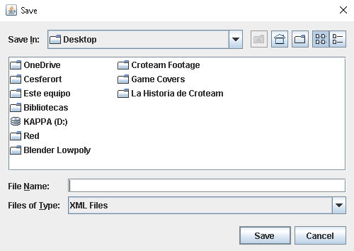

El desplegable nos permitirá acceder a dos opciones, que serán la importación y exportación de un XML de deportistas. Gracias a ellas podemos cargar rápidamente listas de deportistas en la base de datos y hacer todo tipo de pruebas.
Al elegir una de las dos se nos pedirá una dirección para el archivo. Ya sea una dirección en la que encontrar el archivo a importar o una dirección a la que exportar el archivo resultante. Se verificará la validez de esta dirección y se proseguirá con su funcionamiento correspondiente.
